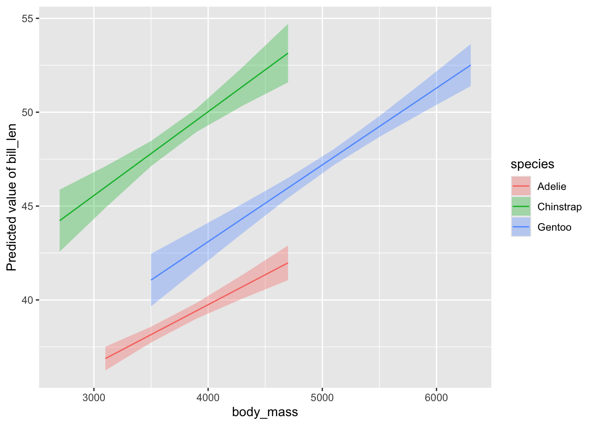

Modelbased for Quick and Beautiful Model Visualization
A year ago, I found the modelbased package while looking for tools to visualize some mixed models. It was a minor revelation. Just like many of the packages from the [easystats]((https://easystats.github.io/) family.
I teach students to simulate the data they want for data viz (yay broom::augment() and modelr::data_grid()), and then plot that in combination with raw data (sometimes). This is great for really detailed nit-picky figures. But, particularly for students just learning, or for a quick-and-dirty data viz of a fit multivariate model, I always wished there was a simpler way.
modelbased and its estimate_relation() function is an amazing one-stop shop for just this (and more!)
To see it in action, let’s fit a model with the Palmer Penguins data set (now in base R!) and see what this function does. Here, we’ll have look at how mass influences bill length and let this relationship vary by species.
library(modelbased)
library(ggplot2)
mod <- lm(bill_len ~ species*body_mass,
data = penguins)
estimate_relation(mod)## Model-based Predictions
##
## species | body_mass | Predicted | SE | 95% CI
## ---------------------------------------------------------
## Chinstrap | 2700 | 44.22 | 0.84 | [42.57, 45.88]
## Adelie | 3100 | 36.88 | 0.32 | [36.24, 37.51]
## Chinstrap | 3100 | 46.01 | 0.56 | [44.90, 47.12]
## Adelie | 3500 | 38.15 | 0.21 | [37.73, 38.57]
## Chinstrap | 3500 | 47.79 | 0.34 | [47.12, 48.46]
## Gentoo | 3500 | 41.06 | 0.71 | [39.66, 42.46]
## Adelie | 3900 | 39.43 | 0.21 | [39.01, 39.85]
## Chinstrap | 3900 | 49.58 | 0.32 | [48.95, 50.20]
## Gentoo | 3900 | 42.69 | 0.55 | [41.61, 43.78]
## Adelie | 4300 | 40.70 | 0.32 | [40.07, 41.34]
## Chinstrap | 4300 | 51.36 | 0.52 | [50.34, 52.39]
## Gentoo | 4300 | 44.33 | 0.40 | [43.55, 45.11]
## Adelie | 4700 | 41.98 | 0.47 | [41.05, 42.90]
## Chinstrap | 4700 | 53.15 | 0.79 | [51.59, 54.71]
## Gentoo | 4700 | 45.97 | 0.27 | [45.44, 46.50]
## Gentoo | 5100 | 47.60 | 0.22 | [47.18, 48.03]
## Gentoo | 5500 | 49.24 | 0.28 | [48.68, 49.80]
## Gentoo | 5900 | 50.88 | 0.42 | [50.06, 51.69]
## Gentoo | 6300 | 52.51 | 0.57 | [51.39, 53.63]
##
## Variable predicted: bill_len
## Predictors modulated: species, body_massThis is a really nice visualization of a data table of predicted values. Even better, though, is we can pipe this object to plot, and…
# basic plotting behavior
estimate_relation(mod) |> plot()Interesting. We’re looking at both predictors and summary output by category for a range of different values of body mass. Neat, but not quite what I want. Fortunately there is the by argument for estimate_relation() which tells what predictors to use (if you have, say, 10), holding others at their mean value in order to marginalize. For example:
# show what's happening
estimate_relation(mod,
by = "species") ## Model-based Predictions
##
## species | Predicted | SE | 95% CI
## ---------------------------------------------
## Adelie | 40.39 | 0.29 | [39.82, 40.96]
## Chinstrap | 50.93 | 0.46 | [50.02, 51.83]
## Gentoo | 43.93 | 0.43 | [43.07, 44.78]
##
## Variable predicted: bill_len
## Predictors modulated: species
## Predictors controlled: body_mass (4.2e+03)# plot it
estimate_relation(mod,
by = "species") |>
plot()Nice, no? And the plot above is a ggplot, so you can scale and theme to your heart’s delight. More on that below.
But what if I want to show the relationship between mass and bill length - my goal after all - with different lines for different species? It all depends on the order you supply variables to the by argument.
I’ll also make an object so I can stop typing estimate_relation() in the future.
# so we can type less
mod_results <- estimate_relation(mod,
by = c("body_mass",
"species"))
plot(mod_results)
This is great! Just what we want!
Well. Almost.
What if we want to customize? We can of course set scales and themes and just add them on - this is a ggplot2 object after all. But what about the data?
We can add an argument to plot() to show it - show_data = TRUE. Let’s do that, and add some more pizzaz. I’m going to do that using some themes from see, which is the viz package for many of the outputs from [easystats]((https://easystats.github.io/) packages (it powers all of those great visualizations from performance::check_model() for example).
# add data
# add a scale
plot(mod_results,
show_data = TRUE) +
see::scale_color_metro() +
see::scale_fill_metro()Beautiful!
But what other arguments can I give to plot()?
This is one place where the documentation for modelbased currently falls a bit short. I’d love a vignette that goes through all of the ways to customize these plots. You can get it, however, if you search around and find the documentation for creating what is called a visualization_recipe() - particularly for the kinds of objects here
class(mod_results)## [1] "estimate_expectation" "estimate_predicted" "see_estimate_predicted"
## [4] "data.frame"So we can look at visualisation_recipe.estimate_predicted(). There, we have a number of arguments we can customize - point, line, pointrange, ribbon, facet, and grid - each using a list() to supply geoms and aesthetic arguments for each feature of the plot. We can also supply "none" for things we do not want.
For example, let’s make all lines black.
# make all lines black
plot(mod_results,
line = list(color = "black"))We see to line we supply a list where we give the aesthetic color as black. We can’t remap things here (at least, I haven’t been able to figure out how if we can), but we can give fixed aesthetics.
For example, let’s do three things
1. remove the CI ribbon
2. make the lines have a size of 1
3. add the data
# remove ribbon but add data
plot(mod_results,
ribbon = "none",
line = list(size = 1),
show_data = TRUE)Lovely!
Last - what underlies the predictions here? These prediction lines are great, but, how are they generated? What if I don’t want my lines limited to
In short, modelbased uses a insight::get_datagrid() to generate all combinations of relevant variables. We can use arguments for this function in estimate_relation() to futz with what data is used for predictions.
Let’s see what the default looks like by changing the line geom to a points.
# data grid
plot(mod_results,
line = list(geom = "point"))OK - we can see those lines are made up of 6 points each. We can change this with a length argument.
estimate_relation(mod,
by = c("body_mass",
"species"),
length = 30) |>
plot(line = list(geom = "point"))You can see how this would be useful for wild nonlinear models - glms, gams, and more. More points will give a smoother curve.
We can do more using insight::data_grid() arguments. If we want to, for example, show the curves where each line is not limited to the range of the data for each species, but instead have one big common range, we can use preserve_range = FALSE.
estimate_relation(mod,
by = c("body_mass",
"species"),
preserve_range = FALSE) |>
plot(line = list(geom = "point"))I’m sure there are other options I’m not covering here. And there’s even more fun to be had with mixed models. Let me know what else you would like to see, and I’ll try and explore the package a bit more!